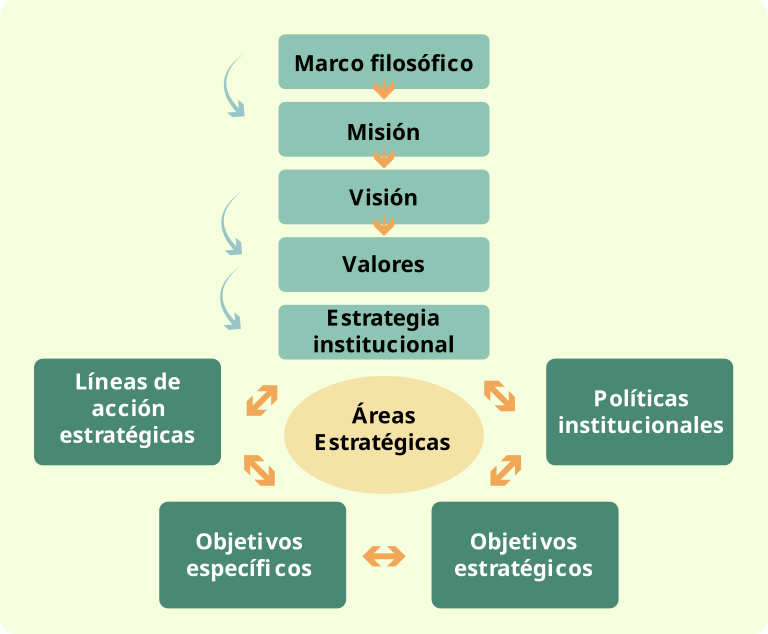
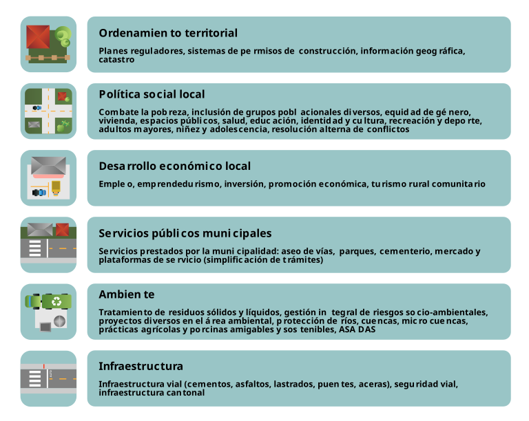
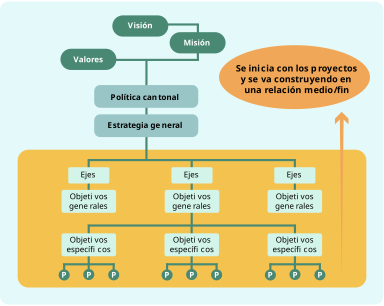
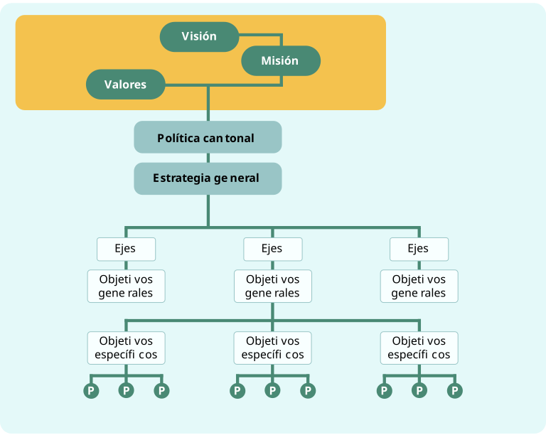
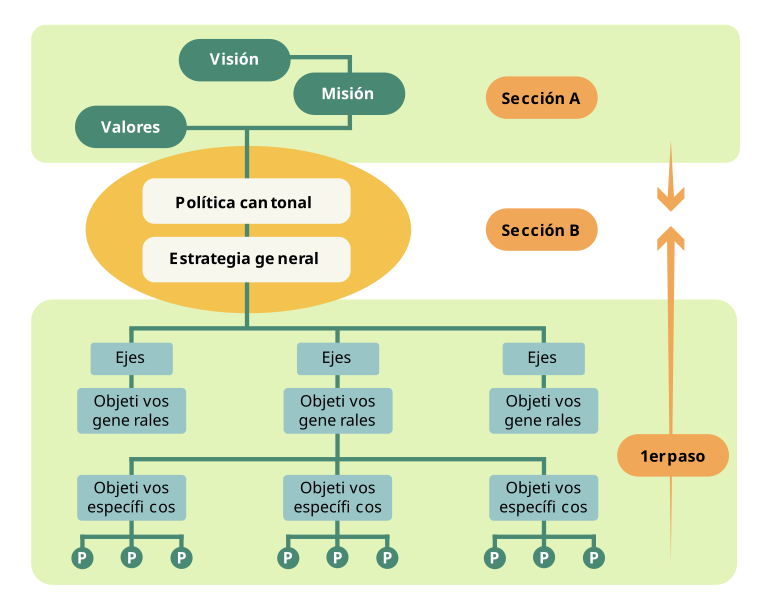

Etapa de elaboración y validación
Cuidando el crecimiento y dando forma al jardín
Paso 7:
Definición del marco estratégico institucional
“En la vida hay sólo dos alternativas: aceptar las cosas tal como son, o asumir la responsabilidad de cambiarlas”
En este paso, se establecen las grandes líneas de acción que orientarán el trabajo municipal durante los próximos años. Aquí se definen áreas prioritarias, objetivos y proyectos que guiarán la gestión de la municipalidad.
Sobre la base de los trabajos anteriores, el esquema de trabajo por seguir es el siguiente:
Figura 4. Esquema de trabajo resumen marco estratégico

Fuente: Elaboración propia
Acciones clave para definir el marco estratégico
Identificación de áreas estratégicas o ejes prioritarios de intervención institucional
Puede considerar las áreas desarrolladas en esta guía, las establecidas en el Programa de Gobierno, las reconocidas por la Contraloría General de la República (CGR) en la matriz de PAO, o aquellas que su municipalidad considere relevantes. Un ejemplo sería el siguiente:
Figura 5. Ejemplo de áreas o ejes estratégicos para trabajarse en el PDM

Fuente: Elaboración propia
B. Definición de las políticas institucionales por área estratégica
El propósito es proporcionar un marco claro y coherente que oriente las acciones de la municipalidad en cada área.
Al establecer límites de acción específicos, las políticas permiten a los ETM desarrollar estrategias clave en áreas como ambiente, infraestructura vial y desarrollo económico, contribuyendo a mejorar la calidad de vida de los habitantes del cantón. Este enfoque asegura que los recursos se direccionen, adecuadamente, y que se monitoree y audite la ejecución de las acciones, manteniendo siempre el compromiso con los objetivos establecidos.
Estas son algunas particularidades sobre las políticas:
- Son orientaciones estratégicas generales que buscan desarrollar una acción convergente y surgida del diálogo y acuerdo entre actores involucrados en los fines y funciones municipales.
- Implican establecer una prioridad y una toma de decisiones por parte de quienes tienen poder de influencia o decisión: en este caso, las autoridades y funcionarios(as).
- Definen el rumbo de las acciones para garantizar que se operarán cambios que le permitan a la municipalidad cumplir mejor su responsabilidad y funciones.
- Son útiles para decidir cómo direccionar los recursos y para ejercer control y auditoría sobre la ejecución de las políticas.
- Constituyen un lineamiento de acción general que debe concretarse con programas, proyectos o actividades específicas.
- Son una decisión escrita que se establece como una guía, para los miembros de una organización, sobre los límites dentro de los cuales pueden operar en distintos asuntos. Es decir, proporcionan un marco de acción lógico y consistente.
- Garantizan que el objetivo se dé en el marco de los compromisos asumidos en la visión, la misión y los valores.
- Deben reflejar compromisos municipales.
Importante
Una política es un compromiso en una dirección; y, no, en otra. Por eso, constituye el puente entre los objetivos y los valores. Define las condiciones generales para articular la visión, la misión, los valores con los objetivos y acciones.
Ejemplos
Cuadro 16. Ejemplo de políticas institucionales por área prioritaria o de interés
| Política | Descripción |
|---|---|
| Desarrollo institucional (lo relacionado con la parte financiera y contable): |
|
| Transparencia y rendición de cuentas: |
|
| Coordinación interinstitucional: | Coordinación permanente con las instancias gubernamentales para potenciar los recursos públicos en bienestar de los habitantes del cantón. |
| Desarrollo económico: |
|
| Social |
|
| Seguridad |
|
| Cultura |
|
| Ambiente |
|
| Planificación urbana y ordenamiento territorial |
|
Fuente: Elaboración propia.
Importante
Para realizar esta actividad de establecimiento de políticas, se recomienda revisar los documentos de contexto de niveles superiores de Gobierno, principalmente, el Plan Nacional de Desarrollo, así como los existentes en la municipalidad, tales como el PCDHL[LE49.1], programa de gobierno; y, en concreto, los resultados del diagnóstico, los cuales contienen orientaciones de política social, económica, ambiental, vial e institucional; estrategias e instrumentos, para lograr el desarrollo y la igualdad de oportunidades.
Reflexione
¿Qué mecanismos pueden garantizar que las políticas formuladas realmente respondan a las necesidades locales?
C. Definición de objetivos (general, estratégico y específicos)
En esta fase, el ETM se enfoca en definir los objetivos que guiarán la implementación del PDM. Este proceso comprende la formulación del objetivo general que resumen la aspiración principal del PDM, así como objetivos estratégicos que respondan a cada una de las áreas estratégicas identificadas previamente. Estos objetivos deben guardar coherencia con lo establecido en la misión y visión definidas.
Importante
Para asegurar la continuidad y coherencia con iniciativas anteriores, se recomienda consultar los planteamientos hechos en otros planes municipales existentes, incorporando lecciones aprendidas y evitando duplicaciones innecesarias.
¿Qué son los objetivos?
Los objetivos son declaraciones claras y concisas que definen los resultados que se pretenden alcanzar, a través del PDM. Responden a las siguientes preguntas clave:
- ¿Qué? ¿Qué queremos lograr?
- ¿Por qué? ¿Por qué es importante alcanzar ese objetivo?
- ¿Cómo? ¿Cómo planteamos lograrlo?
- ¿Cuándo? ¿En qué plazo esperamos alcanzarlo?
Los objetivos también son conocidos como fines o metas y se caracterizan por estos elementos:
- Descripción de qué se pretende alcanzar con el PDM.
- Expresión de la solución (parcial o total) al problema identificado. El problema en positivo.
- Cambios positivos que se prevén como resultado de su consecución (impactos).
- Único objetivo general.
- Generalmente, se redactan utilizando verbos en infinitivo (terminan en -ar, -er, -ir).
¡Recuerde!!!
Con base en el diagnóstico, la visión, la misión, las competencias municipales, los lineamientos de política de niveles superiores de gobierno, las políticas de otros planes municipales y los compromisos establecidos en el programa de gobierno se definen los objetivos, programas y proyectos del PDM.
Considere lo siguiente respecto los objetivos:
3.1. El objetivo general
El objetivo general representa la contribución central del PDM para avanzar hacia la visión planteada por la municipalidad. Debe estar fundamentado en la información recopilada en los pasos anteriores.
En esencia, el objetivo general responde a la pregunta ¿qué hará la administración municipal durante el período de gobierno?
Ejemplos
A continuación, se presentan dos ejemplos de objetivos generales definidos en un PDM:
“Estimular el potencial humano, social y productivo para mejorar la calidad de vida de los habitantes, disminuir la pobreza, ampliar las oportunidades y ofrecer las condiciones para el ejercicio de la plena ciudadanía, generando, de esta manera, mayores oportunidades de progreso hacia el futuro en nuestro cantón”
“Definir una ruta de cambio institucional que mejore la percepción ciudadana, la calidad de la gestión, la capacidad de innovación y aprendizaje organizacional y la gestión financiera para atender los requerimientos del proceso de planificación de mediano y largo plazo”
3.2. Los objetivos estratégicos
Los objetivos estratégicos son los propósitos orientados a solucionar los grandes problemas del desarrollo del cantón. Responden estas preguntas : ¿qué hacer para lograr el objetivo general?, y ¿qué debemos lograr a corto, a mediano y a largo plazo, para que la organización tenga un accionar coherente con su misión?
Esos objetivos están asociados a las grandes dimensiones o ejes prioritarios y estratégicos del plan. Algunos ejemplos de dimensiones estratégicas incluyen desarrollo económico, infraestructura, servicios públicos, gestión ambiental, entre otros.
Características:
- Que sean precisos y claros
- Que expresen resultados
- Que sean posibles de ser medidos
- Que sea pertinente al área
- Que sean factibles o realizables
Ejemplo de objetivo estratégico
Eje ambiente y gestión del riesgo: “Garantizar la sostenibilidad ambiental del territorio en la oferta de bienes y servicios, la biodiversidad, el recurso hídrico y los suelos”.
Propiedades generales de los objetivos estratégicos:
- Expresan cambios: indican el cambio perseguido con el desarrollo de acciones específicas, alineadas con la visión.
- Directrices de cambio: se convierten en los medios por los cuales se alcanza la visión. Describe una condición futura.
- Eje único: debe haber un solo eje estratégico por cada eje o dimensión estratégica.
- Redacción en infinitivo: generalmente redactado utilizando verbos en infinitivo (terminan en -ar, -er, -ir).
- Estructura completa: su estructura debe estar conformada por el verbo + contenido + para qué, por qué, cuando, y da como resultado el objetivo.
Sugerencias para formulación de objetivos estratégicos
- Discuta, antes de la formulación, las ideas que se quieren transmitir, como los impactos o cambios deseados en los próximos cinco años.
- Escriba el objetivo de la manera más clara y sencilla, utilizando palabras que sean entendidas por todos y todas.
- La formulación del objetivo no debería exceder las cinco líneas; cuanto menos, mejor.
- Utilice expresiones verbales como fortalecer, coadyuvar, organizar, contribuir, posibilitar, entre otros.
- La formulación de un objetivo estratégico requiere transmitir y comunicar una propuesta o camino por seguir; en consecuencia, se necesita una alta capacidad de síntesis.
Importante
Para redactar los objetivos, es útil reflexionar la siguiente pregunta: ¿cuál sería esa condición futura que tendría la municipalidad en esta materia? Además, considerar ¿cuál es el propósito de la municipalidad con relación a este conjunto de temas específicos que proponen las líneas de acción?
Cuadro 17. Verbos para redactar objetivos
| Administrar | Decir | Esbozar | Interpretar | Proteger |
| Ampliar | Demostrar | Escoger | Inventariar | Reconocer |
| Analizar | Definir | Evaluar | Manejar | Relacionar |
| Aplicar | Desarrollar | Examinar | Mejorar | Reportar |
| Articular | Diagramar | Experimentar | Montar | Revisar |
| Calcular | Diferenciar | Explicar | Operar | Seleccionar |
| Capacitar | Discriminar | Expresar | Ordenar | Solucionar |
| Clasificar | Discutir | Formular | Organizar | Trazar |
| Comparar | Diseñar | Fortalecer | Preparar | Valorar |
| Comparar | Distinguir | Gestionar | Preparar | Proponer |
| Construir | Divulgar | Identificar | Prevenir | Crear |
| Criticar | Ensamblar | Indicar | Producir | Elegir |
| Contrastar | Establecer | Integrar | Programar | Ilustrar |
Fuente: Elaboración propia.
A continuación, se presentan algunos ejemplos de objetivos estratégicos:
Cuadro 18. Ejemplos de objetivos estratégicos
| Área o dimensión estratégica | Objetivo estratégico |
|---|---|
| Infraestructura vial |
|
| Ambiente |
|
| Seguridad ciudadana |
|
| Desarrollo económico local |
|
| Equipamiento |
|
| Servicios públicos municipales |
|
Fuente: Elaboración propia.
Recuerde
Para cada área estratégica identificada, se debe definir un objetivo estratégico.
3.3. Definición de objetivos específicos
Una vez que el ETM ha definido, para cada área estratégica identificada en su municipalidad, un conjunto de objetivos estratégicos, el siguiente paso es establecer objetivos específicos. Cada área estratégica puede estar conformada por una serie de temas o subtemas que forman parte inherente de esa área.
Cuadro 19. Ejemplo no exhaustivo de áreas estratégicas con sus correspondientes temas/subtemas
| Área estratégica | Temas / subtemas |
|---|---|
| Desarrollo institucional | Ingresos y egresos municipales, gestión presupuestaria, procesos de adquisición de bienes y servicios, gestión de proyectos municipales, gestión de talento humano, coordinación interinstitucional e intermunicipal, sistema de transparencia y rendición de cuentas, vínculos y dinámicas entre instancias municipales. |
| Equipamiento | Infraestructura para servicios públicos locales: salud, educación, recreación, deporte, comunales y de accesibilidad. |
| Ambiente y gestión de riesgo a desastres | Tratamiento de residuos sólidos y líquidos, gestión integral de riesgos socioambiental, proyectos diversos en el área ambiental, acciones orientadas a cumplir compromisos ambientales asumidos por el país para cambio climático, biodiversidad, desertificación y sequía, protección de ríos, cuencas, microcuencas, prácticas agrícolas y porcinas amigables y sostenibles, ASADAS. |
| Ordenamiento territorial | Planes reguladores, sistemas de permisos de construcción, información geográfica, catastro, zona marítimo terrestre. |
| Política social local | Combate a la pobreza; inclusión de grupos poblacionales diversos, equidad de género, vivienda, espacios públicos, salud, educación, identidad y cultura, recreación y deporte, adultos mayores, niñez y adolescencia; resolución alterna de conflictos. |
| Desarrollo económico local | Empleo, emprendedurismo, inversión, promoción económica, turismo rural comunitario. |
| Servicios públicos municipales | Servicios municipales prestados por la municipalidad (aseo de vías, parques, cementerio, mercado) y plataforma de servicios (simplificación de trámites). |
| Infraestructura vial | Infraestructura vial (cementados, asfaltados, lastrados, puentes, aceras), seguridad vial, infraestructura cantonal pública. |
Fuente: FOMUDE, 2009.
Características de los objetivos específicos:
- Son los pasos concretos que se deben seguir para alcanzar los objetivos estratégicos.
- Detallan, desglosan y definen, con mayor precisión, las metas que se pretenden alcanzar.
- Pueden ser más de uno, pero no más de cuatro por objetivo estratégico.
- Se redactan utilizando verbos en infinitivo (terminan en -ar, -er, -ir).
- Tratan de responder a estas preguntas: ¿qué se hará? ¿Para qué se hace? ¿Cómo se hará? ¿Cuándo se hará?
Cuadro 20. Ejemplos de objetivos específicos
| Objetivos estratégicos o generales | Tema / subtema | Objetivos específicos |
|---|---|---|
Infraestructura vial
|
Asfaltado y obras hidráulicas |
|
Ambiente
|
Fortalecimiento de ASADAS |
|
Seguridad
|
Servicio de policía municipal |
|
Desarrollo económico local
|
Empleo |
|
Fuente: Elaboración propia.
Otros ejemplos de objetivos específicos
- Mejorar, divulgar y aplicar, en todas las áreas de la municipalidad, el sistema de control interno: procedimientos, reglamentos, normas, manuales, presupuesto y políticas.
- Elevar el sentido de pertenencia e involucramiento de las regidurías, síndicos y socios laborales hacia la municipalidad.
- Mejorar la gestión administrativa de las autoridades políticas en la toma de decisiones y su ubicación en el contexto de la municipalidad.
- Establecer políticas de protección del ambiente, por parte del concejo municipal.
- Ampliar las condiciones de salud y seguridad ocupacional de los socios laborales de la municipalidad.
- Incrementar la eficiencia y productividad del talento humano en todas las áreas o procesos de la municipalidad.
- Realizar alianzas público-privadas estratégicas con empresas del cantón.
Reflexione
¿Cómo definiría los objetivos estratégicos para el desarrollo de su municipio?
Ejercicio práctico
Redacte un objetivo estratégico para su municipio en un área clave (ej. infraestructura, participación ciudadana, desarrollo económico). Luego, identifique tres acciones concretas para alcanzarlo.
D. Definición de las líneas de acción estratégicas
Para responder a los objetivos estratégicos y específicos por área de interés, es crucial definir líneas de acción estratégicas (las actividades pueden identificarse como tales).
Esas líneas de acción permiten estructurar y coordinar iniciativas que orienten el cambio, de manera efectiva, asegurando que los recursos se utilicen de forma eficiente, para resolver necesidades y alcanzar los resultados esperados. Su diseño responde a una secuencia lógica: partiendo del marco filosófico y las prioridades estratégicas definidas, se establecen objetivos claros que, a su vez, guían la formulación de estrategias y actividades específicas, garantizando coherencia y alineación en la gestión municipal.
Algunas características de las líneas de acción estratégicas se indican a continuación:
- Definen con precisión ideas concretas, iniciativas y alternativas consideradas prioritarias para orientar el cambio deseado.
- Son un conjunto de actividades concretas, interrelacionadas y coordinadas entre sí, diseñadas para producir bienes y servicios que satisfagan necesidades o resuelvan problemas.
- Representan una respuesta planificada para invertir recursos, de forma eficiente, con el objetivo de resolver necesidades de familias, grupos, comunidades, organizaciones o empresas.
- Son un conjunto de actividades relacionadas entre sí que tienen un inicio y un final definido.
- Utilizan recursos limitados para lograr un objetivo deseado.
- Son adecuadas si con ellas se alcanzan los objetivos previstos (eficacia) y con economía de esfuerzos y recursos (eficiencia).
Cuadro 21. Ejemplos de líneas de acción estratégicas
| Área estratégica | Líneas de acción definidas |
|---|---|
|
Seguridad (Policía municipal y de tránsito) |
|
|
Desarrollo institucional (Las TIC) |
|
|
Desarrollo institucional (talento humano) |
|
|
Ambiente (Iniciativas de restauración ambiental) |
|
Fuente: Elaboración propia.
Cuadro 22. Ejemplo sobre acomodo de información relativa a la estrategia institucional.
| Área estratégica | Desarrollo institucional (fortalecimiento de capacidades) | ||
|---|---|---|---|
| Política(s) |
|
||
| Objetivo estratégico |
|
||
| Temas estratégicos | Objetivos específicos | Líneas de acción | Responsable |
| 1.1 | 1.1.1 | ||
| 1.1.2 | |||
| 1.1.3 | |||
| 1.1.4 | |||
| 1.2 | 1.2.1 | ||
| 1.2.2 | |||
| 1.2.3 | |||
| 1.2.4 | |||
Fuente: Elaboración propia.
Recuerde
Lograr tanto la eficacia como la eficiencia es la tarea de la administración pública municipal, para lo cual deberá aplicar toda su capacidad unida a su destreza a fin de diseñar programas y proyectos y de realizar todas las acciones necesarias en coordinación, asocio, cooperación, entre otras formas, con instituciones y actores locales, así como actores regionales, nacionales e, incluso, internacionales, para llevar, a efecto, con el mayor acierto, los objetivos prioritarios definidos en los planes de desarrollo o visiones colectivas deseadas.
E. Plantear políticas, objetivos y proyectos que completan la propuesta de estrategia para el desarrollo institucional
Respecto al documento que contiene políticas, objetivos y proyectos, se recomienda construirlo de manera inductiva, esto es, partir del ordenamiento de proyectos hasta la definición de las políticas. No obstante, la forma de presentación escrita en el documento será deductiva, es decir, de lo general (políticas) a lo particular (proyectos).
En el siguiente diagrama y tabla, se explica esta construcción:
Figura 6. Falta el titulo

Fuente: Adaptación de FOMUDE, 2009.
Cuadro 23. Construcción de políticas, objetivos y proyectos.
| Procedimiento por seguir | Resultado |
|---|---|
| 1. Elaborar por cada eje temático un único listado de proyectos por municipalidad / cantón. | Un listado municipal / cantonal de proyectos por eje temático (9 en total). |
|
2. Al interior de cada listado por eje temático, hacer subgrupos de proyectos según afinidades. Por ejemplo: si fuera el eje de infraestructura, agrupar todos los que tienen que ver con obras viales, los relacionados con obras urbanas, con condiciones de accesibilidad, etc.
Este paso permitirá elaborar los objetivos específicos. |
Un listado municipal / cantonal de proyectos por eje temático que contiene subconjuntos de proyectos (nueve en total). |
|
3. Analizar, con detenimiento, cada subconjunto de proyectos y ensayar la redacción de un objetivo que responda a los proyectos contenidos en ese grupo.
Siguiendo el ejemplo anterior:
|
Un objetivo específico redactado adecuadamente para cada subconjunto de proyectos de cada eje temático. |
| 4. Analizar, con detenimiento, el conjunto de objetivos específicos de cada eje y redactar un objetivo general o estratégico que sea capaz de englobar los objetivos específicos. Esto se logra estableciendo una relación de medio (objetivos específicos) a fin (objetivo general o estratégico). | Un objetivo general o estratégico redactado por cada uno de los ocho ejes temáticos que articulan la estrategia institucional / cantonal. |
|
5. A partir de la redacción de los objetivos, construir políticas por eje temático. La política garantiza que el objetivo se dé en el marco de los compromisos asumidos con el desarrollo humano local (DHL) a partir de los principios. Por tanto, hace referencia a las condiciones que deben darse para que los objetivos tengan viabilidad y contribuyan al DHL, de manera integral.
Siguiendo con el ejemplo anterior:
|
Redacción de un conjunto de políticas por cada eje temático. |
| 6. Revisar la coherencia inductiva/deductiva entre los diversos niveles de la propuesta de estrategia para el desarrollo institucional. |
Una propuesta de documento por municipalidad donde se garantiza:
|
Fuente: Elaboración propia, a partir de FOMUDE, 2009.
En síntesis, el documento que contiene la estrategia para el desarrollo institucional de cada municipalidad significa un conjunto de pasos que, a continuación, se grafican:
Diagrama del primer paso
Figura 7. Construcción, según la lógica de fin / medio, a partir de la visión y misión hacia los valores

Fuente: Adaptación de FOMUDE, 2009.
Diagrama del segundo paso
Para ello, se inicia con las líneas de acción (proyectos); luego, los objetivos específicos y general; para, finalmente, lograr que las políticas sean el puente que amarre un paso y otro.
Figura 8. Diagrama del segundo paso

Fuente: Adaptación de FOMUDE, 2009.
Estrategias sugeridas
- Mapa estratégico visual: utilice plantillas para relacionar ejes estratégicos con sus respectivas políticas, objetivos y líneas de acción (puedes basarte en los ejemplos dados).
- Simulación de alineación: presente un caso práctico y pídale al ETM alinear una política a un eje, un objetivo y una línea de acción.
- Checklist participativo: validar, con los miembros del ETM, si cada política propuesta responde a una necesidad diagnosticada y si es ejecutable.
Reflexione
¿Esta estrategia realmente responde al diagnóstico y a las voces de la comunidad? ¿Está formulada de forma alcanzable y medible?